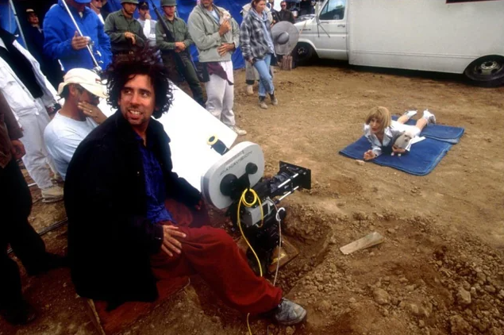
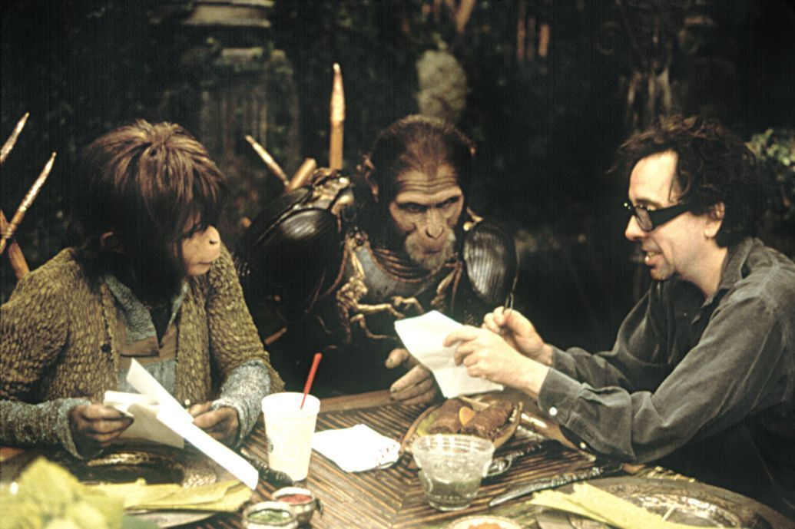
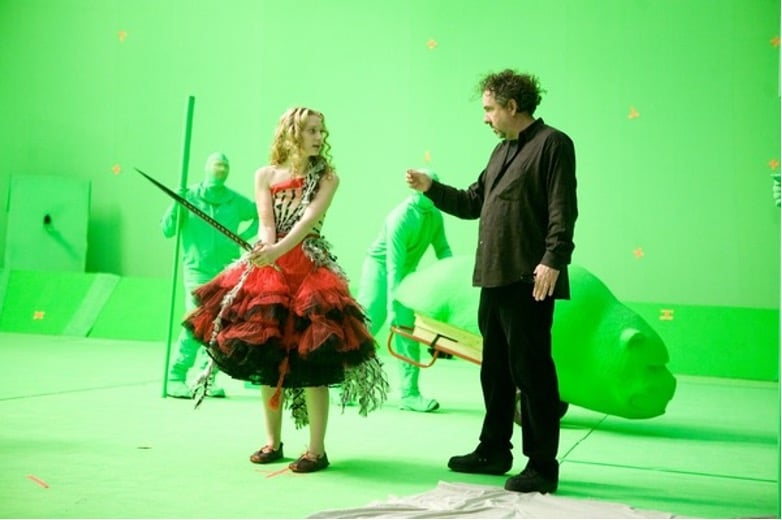

TIM BURTON, EL GENIO DE LO EXTRAÑO
Inicio
Biografía
Filmografía
Sobre filmografía
Animación
Live-action
Estilos y temáticas
Sobre estilos y temáticas
Técnica
Temáticas
Colaboraciones
Otras Obras
Galería de Fotos
Galería de fotos
Inicio
Biografía
Filmografía
Sobre filmografía
Animación
Live-action
Estilos y temáticas
Sobre estilos y temáticas
Técnica
Temáticas
Colaboraciones
Otras Obras
Galería de Fotos
Bocetos de Burton
Tim en los sets de grabación


